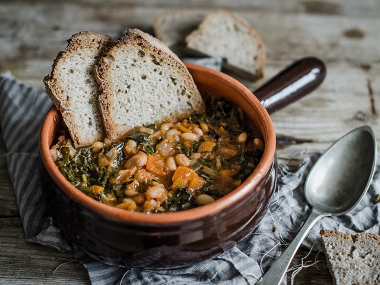

Ribollita

Description
A tasty vegetable soup from Toscana, Italy.
Ingredients
- 300 g white beans
- 2 red onions
- 4 gloves garlic
- 4 pieces of celery
- 2 carrots
- 300 g kale
- olive oil
- 1 tsp. fennel seed
- salt
- black pepper
- 400 g tomato sauce
- 3 cups vegetable broth
- 2 cups dry bread pieces
- small slices of parmesan cheese
Steps
- Mince onions and garlic well. Fry them in olive oil. Cut carrots, kale, and celery
into small slices.
- Add the vegetables to a pot with fennel seed, black pepper, and salt, and simmer them for
10 minutes.
- Add tomato sauce, rinsed beans, and broth. Simmer for half an hour.
- Add the pieces of bread and simmer for 15 minutes. Stir the soup once in a while, and
add some water if needed.
- Pour some olive oil on each portion and serve.
Back